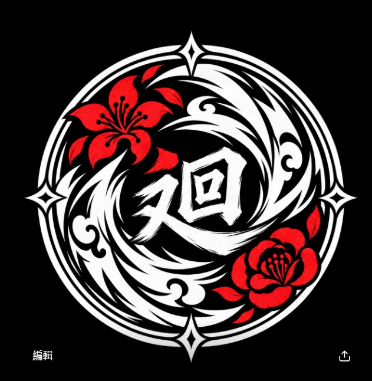
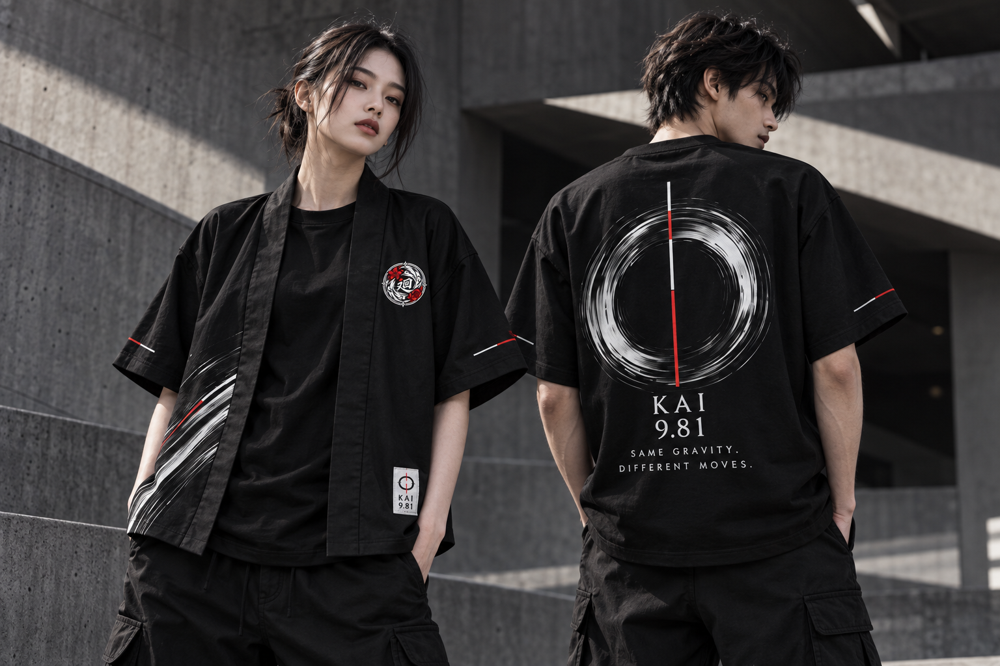

隊員 T 恤BLACK
胸前的迴眾徽記，背後的旋轉軌跡。以黑色為底，讓紅白細節表達共同的熱愛。

從場上到日常，
讓每一次出場，都有自己的態度。

胸前的迴眾徽記，背後的旋轉軌跡。以黑色為底，讓紅白細節表達共同的熱愛。
寬鬆輪廓與流動線條，延伸旋轉的力量。疊穿之間，留給每個人不同的節奏。
我們共享同一個場地、同一套規則，也受到相同的重力牽引；但每一次發射、每一種配置、每一個判斷，都可能讓陀螺走向不同的方向。
有人追求速度，有人重視平衡；有人主動進攻，有人等待反擊。相同的重力，從來沒有規定我們必須走向同一個方向。
迴眾代表的，不是一致。
KAI，取自「迴」的發音，象徵旋轉與永不停歇的循環。每一次回返，都是下一段軌跡的開始。
因共同熱愛而聚集，卻保有各自風格的一群人。我們一起站上場地，也尊重每個不同的選擇。
地球的重力加速度，約為 9.81 m/s²。它象徵我們共同立足的世界，而軌跡，由自己決定。
交錯的紅白直線，源自陀螺發射拉繩的意象。一瞬間的拉動，讓力量成為方向。
水墨圓環描繪高速旋轉留下的痕跡。每一道墨跡都不完全相同，就像每位玩家的打法、節奏與選擇。
從一場對決、一組配置，到一段交流。
把共同的熱愛，帶進同一個空間。